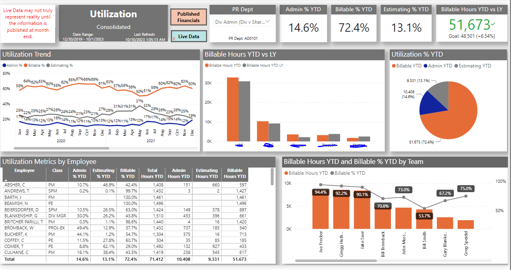
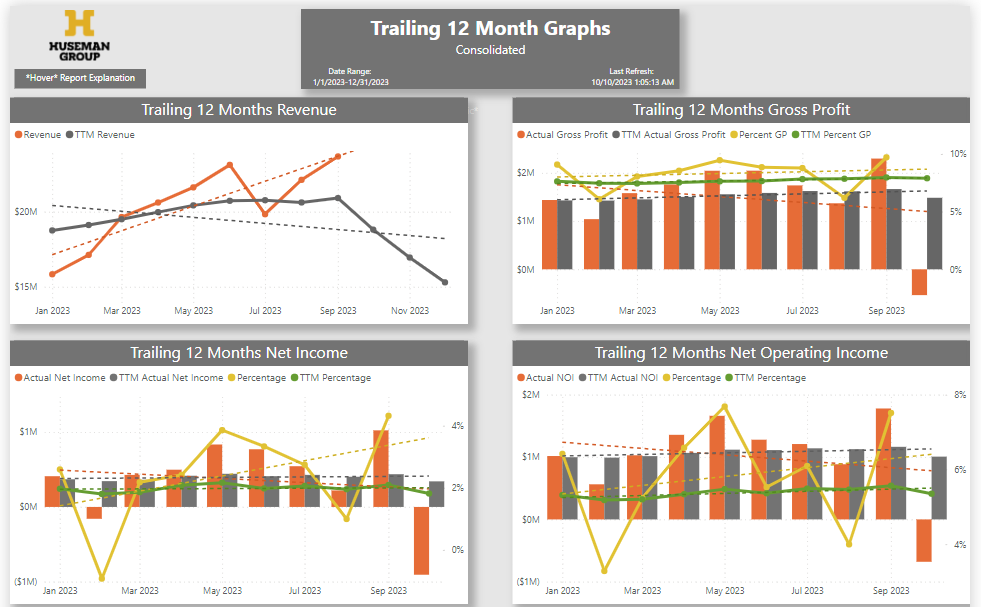
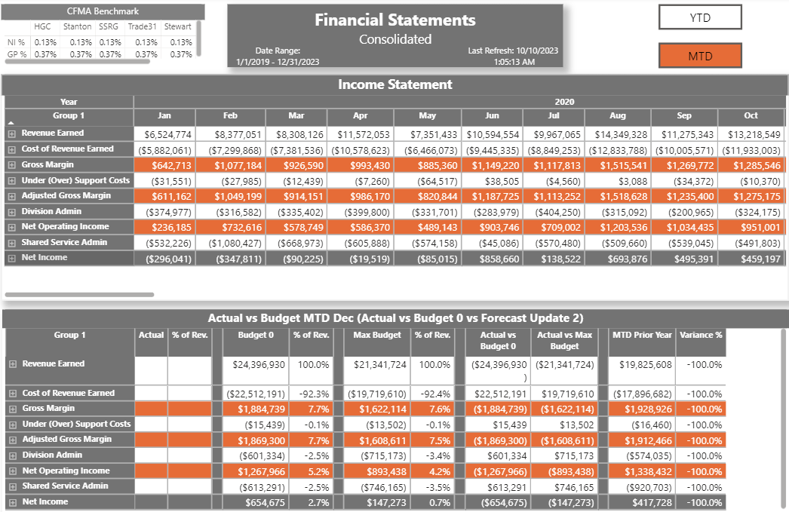
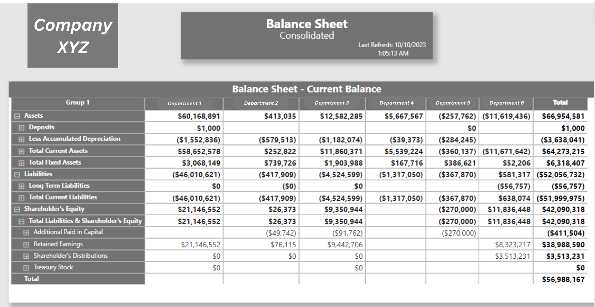

Financial Reporting (Power BI)
Using a myriad of data sources (Netsuite, Salesforce, Sage, .xlsx, Sharepoint, etc.) I was able to build a company-wide financial reporting package. This organization is a PE-owned firm, so EBITDA metrics / operational efficiencies are imperative to convey to the user. The report itself is built and deployed using Power BI. Consisting of 32 unique report pages in total, this page shows 5 high-level, common financial reporting features.

Revenue Analysis
- Dynamic page with buttons allowing user to flip between MTD / YTD metrics and between NI / NOI
- Income Statement metrics compared to budget, forecast and prior year
- User able to dissect each business unit for analysis
- Imperative for understanding Net Operating Income stability
Utilization
- Robust utilization analysis
- Looks at billable and total hours worked per employee
- Critical in staffing decisions
- Allows user to drill down page by specific employee and/or employee segment


Trend Analysis
- Simple analysis of L12M Revenue, Net Income and Gross Profit
- Trend lines display benchmark comparisons
- Page filters enable user to look at KPIs through lens of each business unit
Income Statements
- Standard consolidated income statements
- Comparisons to budget, forecast, and prior year MTD/YTD
- User able to filter to YTD or MTD using buttons and can drill down to income statement by business unit using page filters


Balance Sheet
- Standard balance sheet, separated by column for each business segment
- User able to dynamically select which Month, Year, or Quarter to view